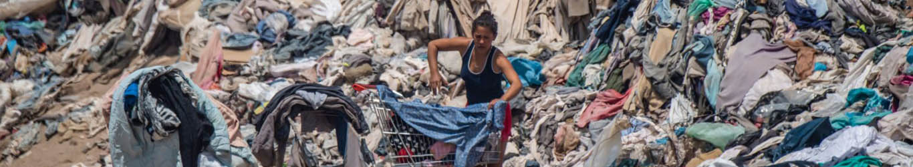

overconsumptie
Wat is overconsumptie
Overconsumptie verwijst naar de overmatige gebruik of consumptie van goederen en hulpbronnen. Het komt voor wanneer individuen, huishoudens of samenlevingen meer consumeren dan ze nodig hebben of meer dan wat duurzaam is voor het milieu en de hulpbronnen.
kan leiden tot negatieve gevolgen voor het milieu, zoals vervuiling en uitputting van natuurlijke hulpbronnen, evenals negatieve gevolgen voor de samenleving, zoals economische onstabiliteit en sociale ongelijkheid.
Milieu
De fast fashion industrie is één van de meest hulpbronnen-intensieve industrieën. De productie van textiel is water-intensief, en de nadruk van snelle mode op snelle omschakeling draagt hiertoe bij.
De productie van kleding (vooral fast fashion) gerbruikt ook grote hoeveelheden energie, het wordt geschat dat de mode-industrie verantwoordelijk is voor ongeveer 10% van de wereldwijde CO2-uitstoot (McKinsey & Company, 2020).
Fast fashion
De fast fashion industrie heeft aanzienlijk bijgedragen aan overconsumptie. De constante introductie van nieuwe stijlen en lage prijzen hebben consumenten aangemoedigd om meer kleding te kopen dan ze nodig hebben, met negatieve gevolgen voor het milieu en de hulpbronnen.
Onderzoek heeft aangetoond dat snelle mode een significante bijdrager is aan overconsumptie. Een studie die is gepubliceerd in het Journal of Cleaner Production ontdekte dat de gemiddelde consument 60% meer kledingstukken koopt en deze de helft zo lang bewaart in vergelijking met 15 jaar geleden, mede dankzij de invloed van snelle mode (Rissanen, 2011).
Dit leidt tot een constante cyclus van het kopen en weggooien van kleding, wat resulteert in een overweldigende hoeveelheid textielafval die eindigt in landfills.
Video
wat kan ik doen om kleding overconsumptie tegen te gaan
- minder kleding kopen
- tweedehands kleding kopen
- repareer je kapotte kleding
- de kleding die je niet meer draagt doneren of verkopen
- koop alleen wat je nodig heb
- koop weinig of geen fast fashion
bronnen: https://www.milieucentraal.nl/bewust-winkelen/kleding/zo-schaadt-kleding-het-milieu/ https://palmamsterdam.nl/blog/de-fast-fashion-industrie/